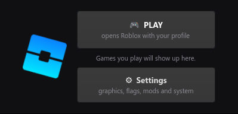
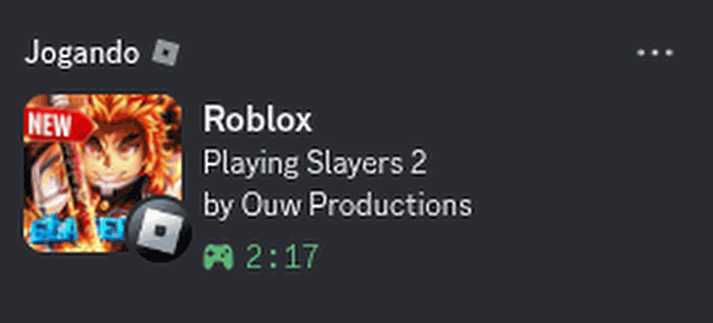
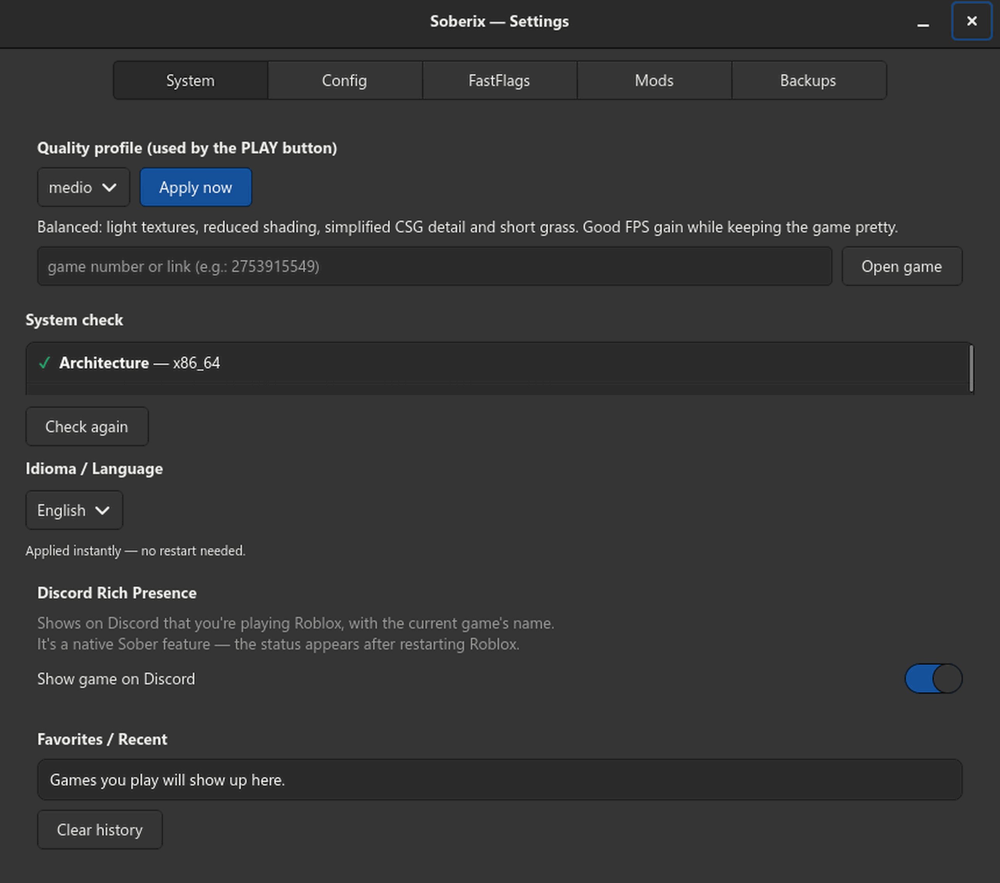

Soberix is an alternative launcher for Roblox that provides additional useful features and functions — built on Sober.
Free & open source (MIT) · single-file AppImage · requires flatpak install flathub org.vinegarhq.Sober
Hit the big PLAY button and Soberix applies your quality profile — Light, Medium or Full — before Roblox even opens. Nothing is locked away: Sober keeps working standalone, and flags you set manually are always preserved.

Share what you're doing among friends with ease. Flip one switch and your Discord profile shows the Roblox game you're playing — artwork and all — powered by Sober's native Rich Presence.

Quality profiles, an allowlist-safe FastFlags editor, mod management, config backups, a system doctor and seven languages — no JSON editing, no terminal required. Power users get a full CLI too.

Everything Soberix manages for you.
Three steps, five minutes.
flatpak install flathub org.vinegarhq.SoberSoberix requires a Linux desktop with GTK 4 (any modern distro) and the Sober Flatpak. AppImages are published automatically for every release.
It fills the same role on Linux, but it's an independent project: pure Python/GTK managing Sober (the native Linux Roblox runtime) instead of the Windows client. No code is shared with Bloxstrap.
Soberix only manages configuration files — it doesn't modify the game, cheat, or touch Roblox's servers. It's in the same category as Bloxstrap and Sober themselves, which have operated openly for years.
Rich Presence works through a local socket that only the Discord desktop app provides — the browser version can't receive it. The same is true for Bloxstrap on Windows.
That's a known Electron bug with fractional display scaling over XWayland, not a Soberix issue. Launch Discord with --ozone-platform-hint=auto to run it native on Wayland and the clicks align.
Anywhere Sober runs: Ubuntu, Fedora, Arch, CachyOS, Mint, Pop!_OS… If it has Flatpak and GTK 4, you're good. ARM works too, though official Sober support for it is beta.